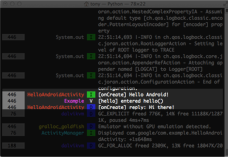

The reliable, generic, fast and flexible logging framework for Java on Android.
logback-android brings the power of logback to Android. logback is a reliable, generic, fast, and flexible
logging library for Java applications.
Quick Start
-
Add logback-android and SLF4J to your project classpath.
-
Pick one of the configuration methods:
-
Create a class-level static logger in your application where logging is desired, and enter log statements.
[Example]
package com.example;
import org.slf4j.Logger;
import org.slf4j.LoggerFactory;
import com.example.R;
import android.app.Activity;
import android.os.Bundle;
public class HelloAndroidActivity extends Activity {
static private final Logger LOG =
LoggerFactory.getLogger(HelloAndroidActivity.class);
@Override
public void onCreate(Bundle savedInstanceState) {
super.onCreate(savedInstanceState);
setContentView(R.layout.main);
LOG.info("Hello Android!");
LOG.debug("reply: {}", Example.hello());
}
}
class Example {
static private final Logger LOG =
LoggerFactory.getLogger(Example.class);
static public String hello() {
LOG.trace("entered hello()");
return "Hi there!";
}
}
-
Run the application, and open your log. For the example above, open Logcat from your machine
(e.g., with
coloredlogcat
) OR from your Android device (e.g., with
CatLog ):

Also check out the other available appenders!
Documentation
License
EPL v1.0
or (per the licensee's choosing)
LGPL v2.1
Features Supported
- Android 2.1+
- Auto-config from Android Manifest or local XML
- Write to Logcat, files, or sockets
- Most original logback features except:
- logback-access
- Groovy config
- Conditionals in the configuration XML
- JMS, JMX, JNDI, and Servlets
Download
Contact
Tony Trinh (tony19 AT gmail com)

{kind=link}